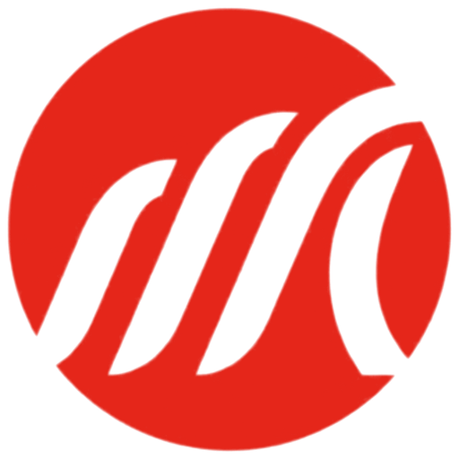
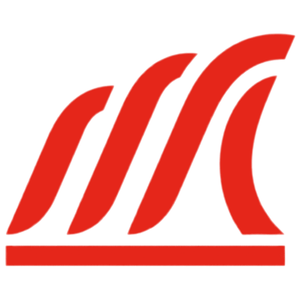
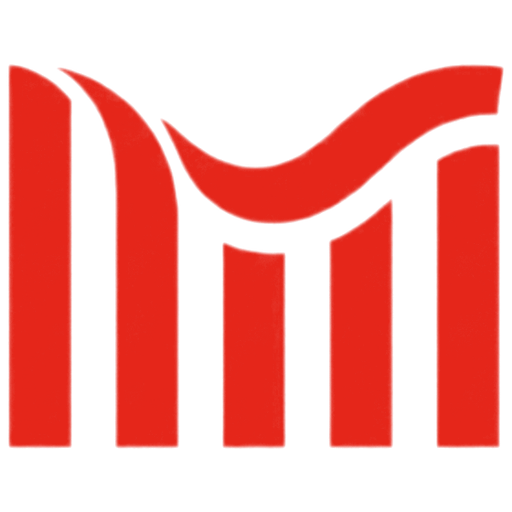
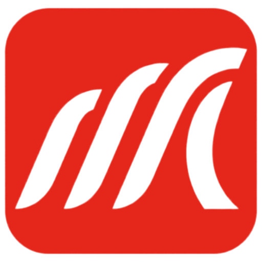
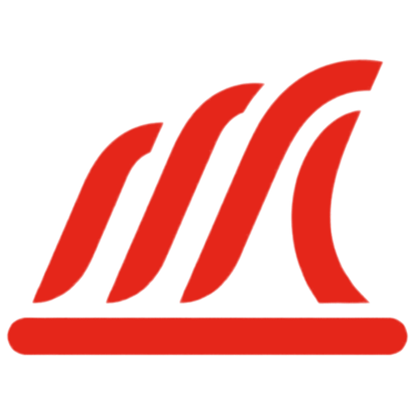
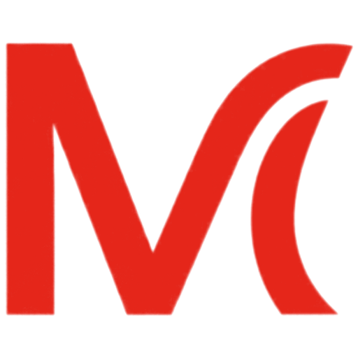
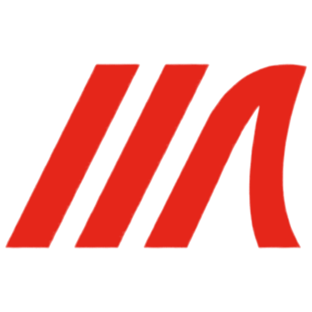

Each variant was drawn by Nano Banana Pro from the original Mane wave image. Five try a base (a bar, a plinth, a joined base, a circle, a tile) and five push the mark itself. Every mark is cut from the raw output and recoloured to exact Signal, so the 32px and 16px tests are real downsamples.
Starting point: the round 3 Mane wave. Four slanted strokes cresting into a wave, with plenty of energy but a weak M, and the stripes merge at 16px.

Circle base · The strongest all-rounder. The mane still reads, and the circle does the job of the base. Ready-made for round avatars and holds best at 16px.

Flat base · The cleanest answer to "a base". The bar grounds the wave and gives it a horizon, and it sits well beside the wordmark. The bar is a little thin compared with the strokes.
No base · The boldest standalone mark and very solid at small sizes. The M reads less than the wave does, so it leans on the wordmark for the name.

No base · The clearest M of the ten, and it quietly brings back the bar graph from the original logo, with the wave running over the tops. Calmer and more corporate than the slanted versions.

Tile base · The app-icon version of m04. Strong as a favicon, heavier beside the wordmark.

Rounded base · Same idea as m01, but the rounded plinth is wider than the mark and starts to look like a surfboard or skateboard.
Joined base · One solid silhouette, but it reads as a shark fin or a sail before it reads as an M.

No base · Clearly an M, but it mixes a plain typeset M with one wave stroke, so the rhythm of the mane is lost.

No base · Simpler and fine at 16px, but it reads as slashes, "///", with a sporty feel.
Arc base · A beautiful wave, but the M is gone. It reads as a D or a sunrise.